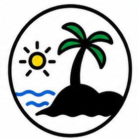
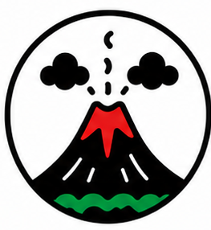
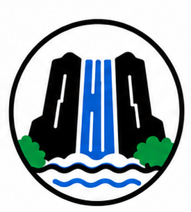
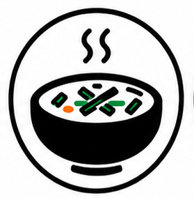
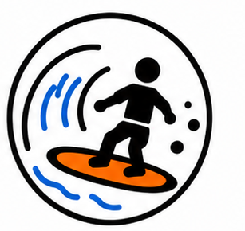
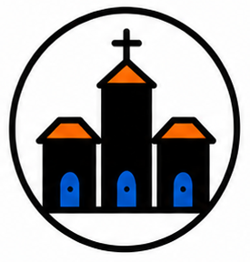

Twin Map
Explora lugares, rutas y experiencias cercanas
Gemelo digital turístico para descubrir El Salvador: mapa interactivo, rutas inteligentes según tu perfil y recomendaciones personalizadas.
Propuesta de valor
Un mapa turístico que recomienda experiencias cercanas según tus intereses.
Funcionalidades principales
- Landing con ilustración del territorio salvadoreño.
- Modo ruta y modo aventura con cuestionario inicial.
- Mapa Mapbox con capas, clima y rutas inteligentes.
- Bitácora, favoritos, emergencia y mapa personalizado por zonas.
Experiencias destacadas






Estado de la solución
Interfaz funcional con mapa real, datos locales y flujo completo de navegación. Algunos módulos siguen en modo simulado mientras se integran más fuentes.
Bienvenido a Twinmap
¿Cómo quieres explorar El Salvador?
Elige un perfil para empezar. Ambos modos incluyen un cuestionario corto para personalizar tu experiencia.
Twinmap
Bienvenido
Modo ruta
Queremos conocerte
- Solo opciones, sin escribir
- Menos de un minuto
- Recomendaciones a tu medida
Modo ruta · Inicio
Buenas noches, Rebeca
Recomendaciones para ti
Tus logros
La IA aprendió de tus gustos
Analizando tu quiz y bitácora para personalizar recomendaciones…
Occidente
Centro
Oriente
Costa
Filtros por zona
Tu ruta perfecta
Modo ruta · Itinerario
Mi ruta
Tus paradas en orden de visita. Añade lugares desde el mapa con el botón «Añadir a mi ruta».
Modo ruta · Registro de viaje
Mi bitácora
Tu historial de lugares, fotos y recorridos completados en El Salvador.
Logros
Tus métricas y desafÃos del viajeLugares visitados
Fotos del viaje
Modo ruta · Lugares guardados
Favoritos
Restaurantes, sitios arqueológicos, playas y más que marcaste desde el mapa.
Tus lugares
Modo ruta · Seguridad
Números de emergencia
Contactos oficiales de El Salvador y noticias en tiempo real filtradas por las zonas de tu ruta.
Contactos de emergencia
Noticias en tu ruta
Configuración
Preferencias de cuenta, privacidad y notificaciones.
Occidente
Centro
Costa
Modo aventura · Rutas locas
Mi bitácora de aventura
Tus rutas más locas, calificadas y listas para presumir. Cada regeneración guarda un recuerdo de tu expedición.
Resumen
Tus aventuras en númerosRutas locas
Modo aventura · Lugares guardados
Favoritos
Lugares, restaurantes y playas que guardaste durante tu aventura.
Tus lugares
Modo aventura · Progreso
Logros
DesafÃos y metas de tu recorrido. Las métricas se actualizan con tu ruta y favoritos.
Resumen
Tus logros
Acerca de
Mockup de información general sobre la plataforma.